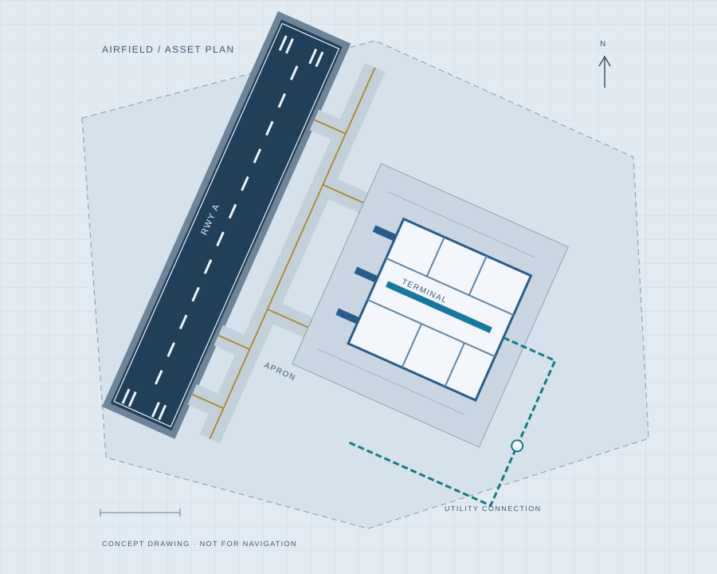
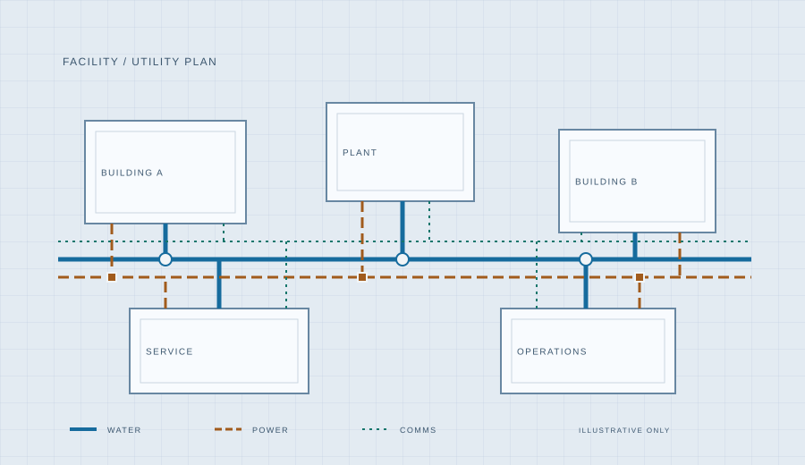
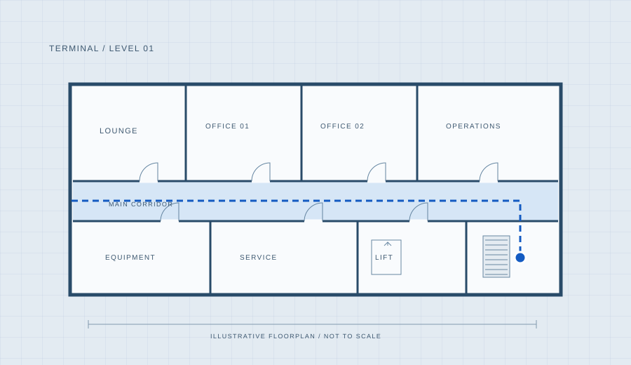

AV.01 / AVIATION GIS
The airfield, in one view
A place to showcase runway, taxiway, pavement, and airport asset mapping through an interactive ArcGIS application.
Aviation / Facilities / Technology
From airfields to indoor spaces. A portfolio for mapping connected assets, building useful tools, and bringing systems together.
Explore my workAIRFIELD → FACILITY → SYSTEM

01 / Geospatial work
The spaces we move through.
The networks behind them.
A portfolio in the making. The projects below are examples, ready to replace with your own work. All preview maps are illustrations.
A place to showcase runway, taxiway, pavement, and airport asset mapping through an interactive ArcGIS application.

UT.02 / UTILITY MAPPINGA place to highlight utility assets, inspection information, and facility networks in a map and dashboard.

IN.03 / INDOOR MAPPINGA place for floor-aware maps that connect rooms, indoor assets, and the routes people take through a building.
02 / Code & infrastructure
Programming, repeatable workflows,
and the systems that support them.
Space for the technical work. These are example project slots for your code, automation, and hosting experience.
A place for Python scripts, GIS tools, small applications, or integrations that solve a specific problem.
A place for data refreshes, batch processing, publishing routines, and workflows that turn manual steps into repeatable runs.
A place for server builds, hosted applications, container deployments, and the infrastructure behind a working service.
Hi, I’m Your Name. This is where I bring together GIS, aviation, facility mapping, and technology projects.
[Add your background, your interests in aviation or facility systems, and the mapping, programming, or infrastructure work you want to do.]
Keep the tools and methods that reflect your experience.
04 / Get in touch
Interested in my work? Let’s start a conversation.